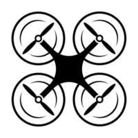

Prvi tab
FAUST - FPV Akademija u Splitu je besplatni STEM projekt udruge Mladi robotičari, namijenjen djeci i učenicima. Kroz interaktivne radionice, polaznici se upoznaju s tehnologijom, robotikom i upravljanjem dronovima
Drugi tab
Projekt se provodi u suradnji s Centrom izvrsnosti Splitsko-dalmatinske županije, a aktivnosti uključuju javne manifestacije, praktične radionice i rad s VR (virtualnom stvarnosti) tehnologijom.
Treći tab
Projekt će rezultirati i stvaranjem prve hrvatske školske FPV dron lige u koju će se kao pilot uključiti škole partneri.
Četvrti tab
Pratite objave javnih poziva za sudjelovanje u Kalendaru događanja.Projekne aktivnosti odvijat će su u Regionalnom znanstvenom centru Adriatik, R.Boškovića 20, partnerskim školama i na javnim mjestima.